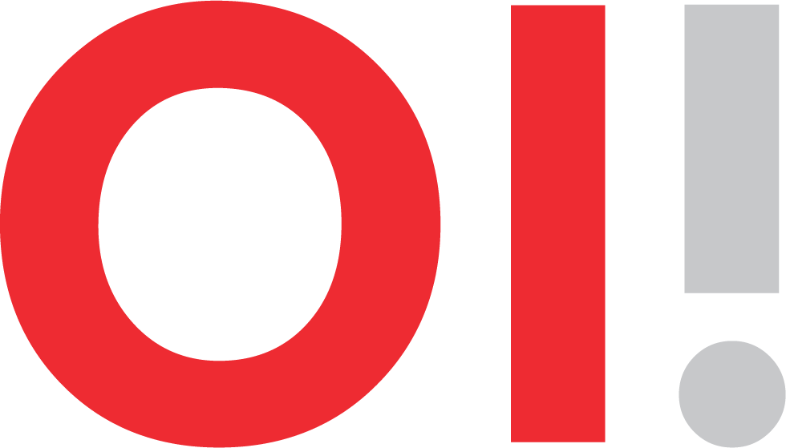
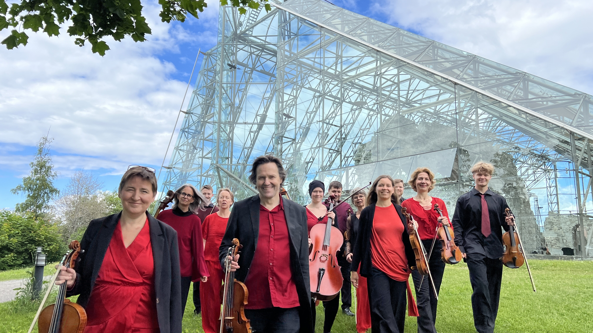
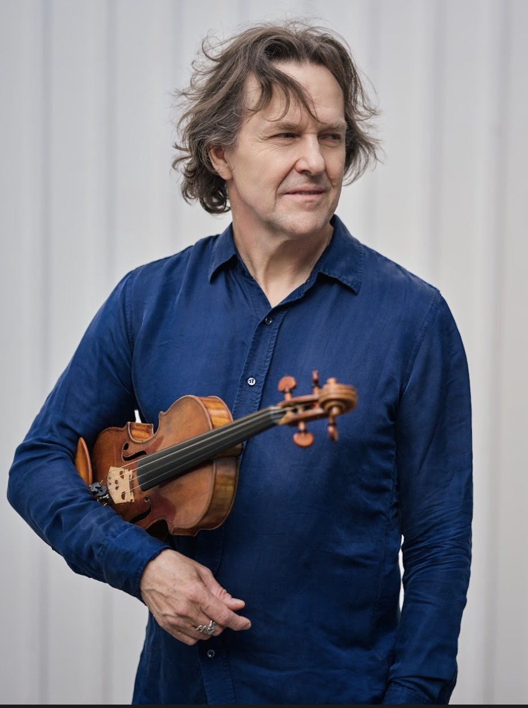
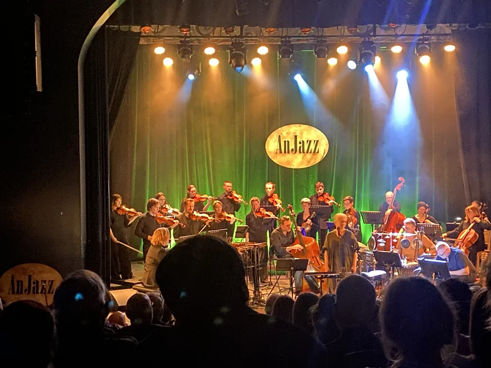
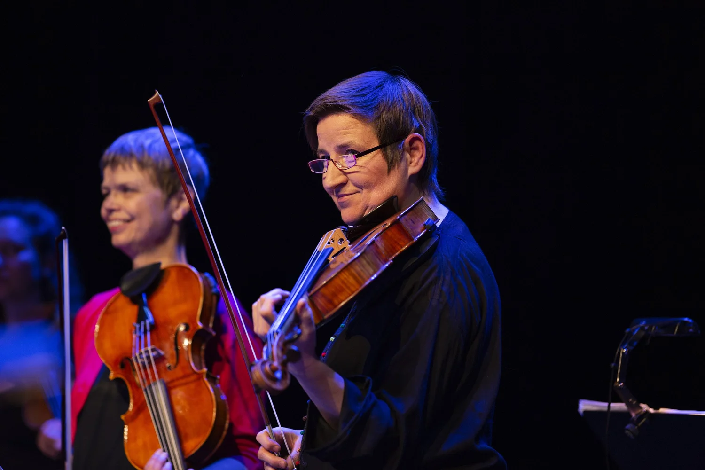
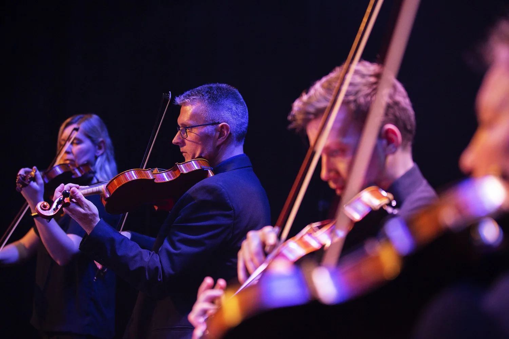

01 · Kunstnerisk råd
- Atle Sponberg
- Johannes Skyberg
- Siri Snortheim

Om oss
Profesjonelt strykerensemble med kontinuerlig drift siden 1991 — den gangen som Gjøvik Sinfonietta.

Ensemblet har gjennomgått en rivende utvikling, både i antall prosjekter og i kunstnerisk nivå.
Konsertene holdes på scener rundt i Innlandet — kulturhus, kirker, fabrikklokaler — framfor på én fast scene. Orkesteret er også husorkester for GjøvikGalla.

Kunstnerisk leder
Atle Sponberg
Kunstnerisk leder for orkesteret siden 1991.
«For meg handler musikk om å berøre mennesker.
Den gleden jeg kjenner ved å spille, ønsker og håper jeg å formidle til publikum.»
Atle Sponberg
Organisasjon
Kunstnerisk råd, styret og valgkomiteen bidrar til å utvikle og forvalte Orkester Innlandet.
01 · Kunstnerisk råd
02 · Styret
Vararepresentanter
03 · Valgkomiteen
Bilder fra orkesteret



Bli en del av fellesskapet rundt orkesteret
Bli orkestervenn →